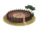
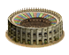
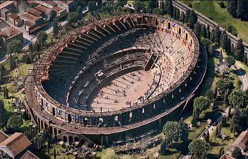
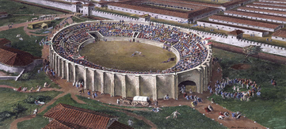
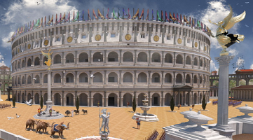

RTR: Imperium Surrectum
RTR: Imperium SurrectumWooden Arena (Leisure) chain
4 levels, each replacing the one before it — you upgrade in place rather than building alongside.
Wooden Arena (Leisure) → Arena (Leisure) → Amphitheatre (Leisure) → Colosseum (Leisure)
Pictures are the game's own building art. Where a culture ships none of its own, the game falls back to another culture's, and that is what is shown here.
Levels at a glance
| Level | Cost | Build time | Minimum settlement | Upgrades to | Level | Cost | Build time | Minimum settlement | Upgrades to | ||
|---|---|---|---|---|---|---|---|---|---|---|---|
 | Wooden Arena (Leisure) | 3,000 | 4 | large town | Arena (Leisure) |  | Arena (Leisure) | 6,000 | 6 | city | Amphitheatre (Leisure) |
| Amphitheatre (Leisure) | 12,000 | 8 | large city | Colosseum (Leisure) | Colosseum (Leisure) | 18,000 | 10 | huge city | — |
Costs in denarii, build time in turns.
Amphitheatre (Leisure)

This substantial amphitheatre allows Games that properly reflect the grandeur and glory of the Roman world. Weak-kneed foreigners may faint at the spectacle, but the Roman crowd know how to appreciate and enjoy the Games! The atmosphere and the ceremony help glue the Roman world together, and make everyone feel good to be a Roman citizen. That the games are free to attend is simply a bonus - so what if some spoiled rich boy in a toga wants to impress everyone? Let him! And let the Games commence!
An Amphitheatre can be upgraded as the city grows in size and importance.
| Cost | 12,000 denarii | Build time | 8 turns | Minimum settlement | large city | Upgrades to | Colosseum (Leisure) |
What it does
- taxable income -12 to -8, scaling with settlement size (player only)
Show 16 effects that apply only in the circumstances shown
- can stage races — only when
factions { romans_julii, roman_rebels_1, roman_rebels_2, roman_senate, volsinii, } - +3 public order (happiness) — only when
factions { romans_julii, roman_rebels_1, roman_rebels_2, roman_senate, volsinii, } and not arena_animals and not slave_trade_building_supply - +4 public order (happiness) — only when
factions { romans_julii, roman_rebels_1, roman_rebels_2, roman_senate, volsinii, } and arena_animals and not slave_trade_building_supply - +5 public order (happiness) — only when
factions { romans_julii, roman_rebels_1, roman_rebels_2, roman_senate, volsinii, } and slave_trade_building_supply and not arena_animals - +6 public order (happiness) — only when
factions { romans_julii, roman_rebels_1, roman_rebels_2, roman_senate, volsinii, } and slave_trade_building_supply and arena_animals - +1 public order (law) — only when
factions { romans_julii, roman_rebels_1, roman_rebels_2, roman_senate, } - -8 taxable income — only when
size1 and building_present_min_level amphitheatres urban_amphitheatre and not is_player - -8 taxable income — only when
size2 and building_present_min_level amphitheatres urban_amphitheatre and not is_player - -9 taxable income — only when
size3 and building_present_min_level amphitheatres urban_amphitheatre and not is_player - -9 taxable income — only when
size4 and building_present_min_level amphitheatres urban_amphitheatre and not is_player - -10 taxable income — only when
size5 and building_present_min_level amphitheatres urban_amphitheatre and not is_player - -10 taxable income — only when
size6 and building_present_min_level amphitheatres urban_amphitheatre and not is_player - -11 taxable income — only when
size7 and building_present_min_level amphitheatres urban_amphitheatre and not is_player - -11 taxable income — only when
size8 and building_present_min_level amphitheatres urban_amphitheatre and not is_player - -12 taxable income — only when
size9 and building_present_min_level amphitheatres urban_amphitheatre and not is_player - -12 taxable income — only when
size10 and building_present_min_level amphitheatres urban_amphitheatre and not is_player
Religious belief — spreads 1 belief, by how much depending on what the region already believes.
- Italic +5
Wooden Arena (Leisure)

This small wooden arena allows small-scale Games to be staged for the entertainment and satisfaction of all true Romans. The Games are part of what makes Romans properly 'Roman', and everyone feels part of the community and forgets their problems on days when there are Games to go to! Everyone feels even happier knowing that the Games are free and that a wealthy man, keen to increase his popularity, is paying.
The Arena also bolsters Romans' happiness to know that they are a superior people: when even the condemned and slaves die with courage, can a true Roman do any less in the face of death?
An Arena can be upgraded as the settlement grows in size and importance.
| Cost | 3,000 denarii | Build time | 4 turns | Minimum settlement | large town | Upgrades to | Arena (Leisure) |
What it does
- taxable income -6 to -2, scaling with settlement size (player only)
Show 11 effects that apply only in the circumstances shown
- +1 public order (happiness) — only when
factions { romans_julii, roman_rebels_1, roman_rebels_2, roman_senate, volsinii, } - -2 taxable income — only when
size1 and building_present_min_level amphitheatres wooden_amphitheatre and not is_player - -2 taxable income — only when
size2 and building_present_min_level amphitheatres wooden_amphitheatre and not is_player - -3 taxable income — only when
size3 and building_present_min_level amphitheatres wooden_amphitheatre and not is_player - -3 taxable income — only when
size4 and building_present_min_level amphitheatres wooden_amphitheatre and not is_player - -4 taxable income — only when
size5 and building_present_min_level amphitheatres wooden_amphitheatre and not is_player - -4 taxable income — only when
size6 and building_present_min_level amphitheatres wooden_amphitheatre and not is_player - -5 taxable income — only when
size7 and building_present_min_level amphitheatres wooden_amphitheatre and not is_player - -5 taxable income — only when
size8 and building_present_min_level amphitheatres wooden_amphitheatre and not is_player - -6 taxable income — only when
size9 and building_present_min_level amphitheatres wooden_amphitheatre and not is_player - -6 taxable income — only when
size10 and building_present_min_level amphitheatres wooden_amphitheatre and not is_player
Religious belief — spreads 1 belief, by how much depending on what the region already believes.
- Italic +2
Arena (Leisure)

This provincial arena allows small-scale Games to be staged for the entertainment and satisfaction of all true Romans. What was once a small wooden Arena has been improved and fitted with elevated stone seatings, to serve as a venue were the people go to watch all sorts of entertainment, including, of course, gladiatoral fights! The Games are part of what makes Romans properly 'Roman', and everyone feels part of the community and forgets their problems on days when there are Games to go to! Everyone feels even happier knowing that the Games are free and that a wealthy man, keen to increase his popularity, is paying.
The Arena also bolsters Romans' happiness to know that they are a superior people: when even the condemned and slaves die with courage, can a true Roman do any less in the face of death?
An Arena can be upgraded as the settlement grows in size and importance.
| Cost | 6,000 denarii | Build time | 6 turns | Minimum settlement | city | Upgrades to | Amphitheatre (Leisure) |
What it does
- taxable income -8 to -4, scaling with settlement size (player only)
Show 14 effects that apply only in the circumstances shown
- can stage races — only when
factions { romans_julii, roman_rebels_1, roman_rebels_2, roman_senate, volsinii, } - +1 public order (happiness) — only when
factions { romans_julii, roman_rebels_1, roman_rebels_2, roman_senate, volsinii, } and not slave_trade_building_supply - +2 public order (happiness) — only when
factions { romans_julii, roman_rebels_1, roman_rebels_2, roman_senate, volsinii, } and slave_trade_building_supply - +1 public order (law) — only when
factions { romans_julii, roman_rebels_1, roman_rebels_2, roman_senate, } - -4 taxable income — only when
size1 and building_present_min_level amphitheatres stone_amphitheatre and not is_player - -4 taxable income — only when
size2 and building_present_min_level amphitheatres stone_amphitheatre and not is_player - -5 taxable income — only when
size3 and building_present_min_level amphitheatres stone_amphitheatre and not is_player - -5 taxable income — only when
size4 and building_present_min_level amphitheatres stone_amphitheatre and not is_player - -6 taxable income — only when
size5 and building_present_min_level amphitheatres stone_amphitheatre and not is_player - -6 taxable income — only when
size6 and building_present_min_level amphitheatres stone_amphitheatre and not is_player - -7 taxable income — only when
size7 and building_present_min_level amphitheatres stone_amphitheatre and not is_player - -7 taxable income — only when
size8 and building_present_min_level amphitheatres stone_amphitheatre and not is_player - -8 taxable income — only when
size9 and building_present_min_level amphitheatres stone_amphitheatre and not is_player - -8 taxable income — only when
size10 and building_present_min_level amphitheatres stone_amphitheatre and not is_player
Religious belief — spreads 1 belief, by how much depending on what the region already believes.
- Italic +3
Colosseum (Leisure)

This magnificent setting allows the staging of Games that satisfy the passions of all true Romans. Gladiators willingly face death, knowing that their courage will be celebrated by a knowledgeable and appreciative crowd! This is truly a magnificent public building for all Romans to enjoy as equals.
The Games staged here are truly spectacular! No expense will be spared in collecting savage and rare beasts from all over the world, nor in gathering the finest, most expensive and most famous gladiators to perform. To live in a city with an amphitheatre is to be happy, and entertained lavishly at someone else's expense!
There's always an excuse to put on some kind of show too: games to influence local elections or mark victories; funerary games to mark the death of a great man; or votive games to thank the Gods. With Roman practicality, though, the Gods don't get their thanks until whatever the problem they were supposed to solve really has gone away!
| Cost | 18,000 denarii | Build time | 10 turns | Minimum settlement | huge city |
What it does
- taxable income -12 to -8, scaling with settlement size (player only)
Show 16 effects that apply only in the circumstances shown
- can stage races — only when
factions { romans_julii, roman_rebels_1, roman_rebels_2, roman_senate, volsinii, } - +4 public order (happiness) — only when
factions { romans_julii, roman_rebels_1, roman_rebels_2, roman_senate, volsinii, } and not arena_animals and not slave_trade_building_supply - +6 public order (happiness) — only when
factions { romans_julii, roman_rebels_1, roman_rebels_2, roman_senate, volsinii, } and arena_animals and not slave_trade_building_supply - +7 public order (happiness) — only when
factions { romans_julii, roman_rebels_1, roman_rebels_2, roman_senate, volsinii, } and slave_trade_building_supply and not arena_animals - +9 public order (happiness) — only when
factions { romans_julii, roman_rebels_1, roman_rebels_2, roman_senate, volsinii, } and slave_trade_building_supply and arena_animals - +2 public order (law) — only when
factions { romans_julii, roman_rebels_1, roman_rebels_2, roman_senate, } - -8 taxable income — only when
size1 and building_present_min_level amphitheatres urban_amphitheatre and not is_player - -8 taxable income — only when
size2 and building_present_min_level amphitheatres urban_amphitheatre and not is_player - -9 taxable income — only when
size3 and building_present_min_level amphitheatres urban_amphitheatre and not is_player - -9 taxable income — only when
size4 and building_present_min_level amphitheatres urban_amphitheatre and not is_player - -10 taxable income — only when
size5 and building_present_min_level amphitheatres urban_amphitheatre and not is_player - -10 taxable income — only when
size6 and building_present_min_level amphitheatres urban_amphitheatre and not is_player - -11 taxable income — only when
size7 and building_present_min_level amphitheatres urban_amphitheatre and not is_player - -11 taxable income — only when
size8 and building_present_min_level amphitheatres urban_amphitheatre and not is_player - -12 taxable income — only when
size9 and building_present_min_level amphitheatres urban_amphitheatre and not is_player - -12 taxable income — only when
size10 and building_present_min_level amphitheatres urban_amphitheatre and not is_player
Religious belief — spreads 1 belief, by how much depending on what the region already believes.
- Italic +8
What the shorthands in those conditions stand for (13)
These are the mod's own, quoted from the game files unchanged.
| Shorthand | Stands for | Shorthand | Stands for | Shorthand | Stands for |
|---|---|---|---|---|---|
arena_animals | wild_animals_building_supply or resource elephants | size1 | major_event "empire_size1" | size10 | major_event "empire_size10" |
size2 | major_event "empire_size2" | size3 | major_event "empire_size3" | size4 | major_event "empire_size4" |
size5 | major_event "empire_size5" | size6 | major_event "empire_size6" | size7 | major_event "empire_size7" |
size8 | major_event "empire_size8" | size9 | major_event "empire_size9" | slave_trade_building_supply | resource slave_trade or hidden_resource slave_supply_built factionwide |
wild_animals_building_supply | resource wild_animals or hidden_resource wild_animals_supply_built factionwide |